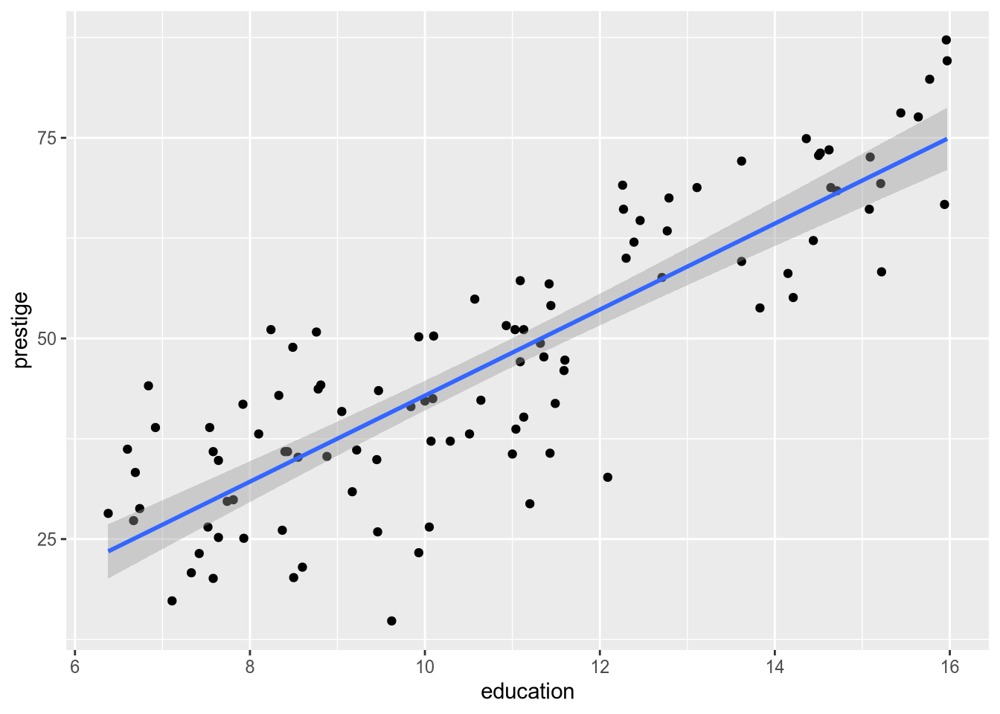

5 Bivariate Regression
The goal of empirical social science is usually to learn about the relationships between variables in the social world. Our goals might be descriptive: were college graduates more likely to vote for Clinton in 2016? Or causal: does receiving more education make a person more liberal on average? Or predictive: what kinds of voters should Democrats target in 2020 to have the best chance of victory?
The linear model is one of the simplest ways to model relationships between variables. Ordinary least squares regression is one of the easiest and (often) best ways to estimate the parameters of the linear model. Consequently, a linear model estimated by OLS is the starting point for many analyses. We will start with the simplest case: regression on a single covariate.
5.1 Probability Refresher
Let \(Y\) be a random variable that takes values in the finite set \(\mathcal{Y}\) according to the probability mass function \(f_Y : \mathcal{Y} \to [0, 1]\). The expected value (aka expectation) of \(Y\) is the weighted average of each value in \(\mathcal{Y}\), where the weights are the corresponding probabilities: \begin{equation} E[Y] = \sum_{y \in \mathcal{Y}} y \: f_Y(y); \end{equation} For a continuous random variable \(Y\) on \(\mathbb{R}\) with probability density function \(f_Y\), the expected value is the analogous integral: \begin{equation} E[Y] = \int y \: f_Y(y) \, dy. \end{equation} Now suppose \((X, Y)\) is a pair of discrete random variables drawn according to the joint mass function \(f_{XY}\) on \(\mathcal{X} \times \mathcal{Y}\), with respective marginal mass functions \(f_X\) and \(f_Y\).12 Recall the formula for conditional probability, \begin{equation} \Pr(Y = y \,|\, X = x) = \frac{\Pr(X = x, Y = y)}{\Pr(X = x)} = \frac{f_{XY}(x, y)}{f_X(x)}. \end{equation} For each \(x \in \mathcal{X}\), we have the conditional mass function \begin{equation} f_{Y|X}(y \,|\, x) = \frac{f_{XY}(x, y)}{f_X(x)} \end{equation} and corresponding conditional expectation \begin{equation} E[Y | X = x] = \sum_{y \in \mathcal{Y}} y \: f_{Y|X}(y \,|\, x). \end{equation} For continuous random variables, the conditional expectation is \begin{equation} E[Y | X = x] = \int y \: f_{Y|X} (y \,|\, x) \, dy, \end{equation}where \(f_{Y|X}\) is the conditional density function.
The variance of a random variable \(Y\) is \begin{equation} V[Y] = E[(Y - E[Y])^2]. \end{equation} Given a sample \(Y_1, \ldots, Y_N\) of observations of \(Y\), we usually estimate \(V[Y]\) with the sample variance \begin{equation} S_Y^2 = \frac{1}{N-1} \sum_n (Y_n - \bar{Y})^2, \end{equation}where \(\bar{Y}\) is the sample mean and \(\sum_n\) denotes summation from \(n = 1\) to \(N\).
Similarly (in fact a generalization of the above), the covariance between random variables \(X\) and \(Y\) is \[ {\mathop{\rm Cov}\nolimits}[X, Y] = E[(X - E[X]) (Y - E[Y])], \] which we estimate with the sample covariance \begin{equation} S_{XY} = \frac{1}{N-1} \sum_n (X_n - \bar{X}) (Y_n - \bar{Y}). \end{equation} A fun fact about the sample covariance is that \begin{align} S_{XY} &= \frac{1}{N-1} \sum_n (X_n - \bar{X}) (Y_n - \bar{Y}) \\ &= \frac{1}{N-1} \left[ \sum_n X_n (Y_n - \bar{Y}) + \sum_n \bar{X} (Y_n - \bar{Y}) \right] \\ &= \frac{1}{N-1} \left[ \sum_n X_n (Y_n - \bar{Y}) + \bar{X} \sum_n (Y_n - \bar{Y}) \right] \\ &= \frac{1}{N-1} \sum_n X_n (Y_n - \bar{Y}). \end{align}If we had split up the second term instead of the first, we would see that \[ S_{XY} = \frac{1}{N-1} \sum_n Y_n (X_n - \bar{X}) \] as well.
Since the (sample) variance is a special case of the (sample) covariance, by the same token we have \begin{equation} S_Y^2 = \frac{1}{N-1} \sum_n Y_n (Y_n - \bar{Y}). \end{equation}5.2 The Linear Model
Suppose we observe a sequence of \(N\) draws from \(f_{XY}\), denoted \((X_1, Y_1), (X_2, Y_2), \ldots, (X_N, Y_N)\), or \(\{(X_n, Y_n)\}_{n=1}^N\) for short. What can we learn about the relationship between \(X\) and \(Y\) from this sample of data?
If we were really ambitious, we could try to estimate the shape of the full joint distribution, \(f_{XY}\). The joint distribution encodes everything there is to know about the relationship between the two variables, so it would be pretty useful to know. But except in the most trivial cases, it would be infeasible to estimate \(f_{XY}\) precisely. If \(X\) or \(Y\) can take on more than a few values, estimating the joint distribution would require an amount of data that we’re unlikely to have.13
The first way we simplify our estimation task is to set our sights lower. Let \(Y\) be the response or the dependent variable—i.e., the thing we want to explain. We call \(X\) the covariate or the independent variable. Instead of estimating the full joint distribution, we’re just going to try to learn the conditional expectation, \(E[Y \,|\, X]\). In other words, for each potential value of the covariate, what is the expected value of the response? This will allow us to answer questions like whether greater values of \(X\) are associated with greater values of \(Y\).
Two important things about the estimation of conditional expectations before we go any further.
Statements about conditional expectations are not causal. If \(Y\) is rain and \(X\) is umbrella sales, we know \(E[Y | X]\) increases with \(X\), but that doesn’t mean umbrella sales make it rain.
We will spend some time in the latter part of the course on how to move from conditional expectations to causality. Then, in Stat III, you will learn about causal inference in excruciating detail.
The conditional expectation doesn’t give you everything you’d want to know about the relationship between variables.
As a hypothetical example, suppose I told you that taking a particular drug made people happier on average. In other words, \(E[\text{Happiness} \,|\, \text{Drug}] > E[\text{Happiness} \,|\, \text{No Drug}]\). Sounds great! Then imagine the dose-response graph looked like this:
The fact that expected happiness rises by half a point doesn’t quite tell the whole story.
In spite of these caveats, conditional expectation is a really useful tool for summarizing the relationship between variables.
If \(X\) takes on sufficiently few values (and we have enough data), we don’t need to model the conditional expectation function. We can just directly estimate \(E[Y | X = x]\) for each \(x \in \mathcal{X}\). The graph above, where there are just two values of \(X\), is one example.
But if \(X\) is continuous, or even if it is discrete with many values, estimating \(E[Y | X]\) for each distinct value is infeasible. In this case, we need to model the relationship. The very simplest choice—and thus the default for social scientists—is to model the conditional expectation of \(Y\) as a linear function of \(X\): \begin{equation} E[Y \,|\, X] = \alpha + \beta X. \end{equation}In this formulation, \(\alpha\) and \(\beta\) are the parameters to be estimated from sample data. We call \(\alpha\) and \(\beta\) “coefficients,” with \(\alpha\) the “intercept” and \(\beta\) the “slope.” Regardless of how many different values \(X\) might take on, we only need to estimate two parameters of the linear model.
Exercise your judgment before using a linear model. Ask yourself, is a linear conditional expectation function at least minimally plausible? Not perfect—just a reasonable approximation. If \(X\) is years of education and \(Y\) is annual income, the answer is probably yes (depending on the population!). But if \(X\) is hour of the day (0–24) and \(Y\) is the amount of traffic on I-65, probably not.
To obtain the linear conditional expectation, we usually assume the following model of the response variable: \begin{equation} Y_n = \alpha + \beta X_n + \epsilon_n, \end{equation} where \(\epsilon_n\) is “white noise” error with the property \begin{equation} E[\epsilon_n \,|\, X_1, \ldots X_N] = 0. \end{equation}You can think of \(\epsilon_n\) as the summation of everything besides the covariate \(X_n\) that affects the response \(Y_n\). The assumption that \(E[\epsilon_n \,|\, X_1, \ldots, X_N] = 0\) implies that these external factors are uncorrelated with the covariate. This is not a trivial technical condition that you can ignore—it is a substantive statement about the variables in your model. It requires justification, and it is difficult to justify.
For now we will proceed assuming that our data satisfy the above conditions. Later in the course, we will talk about how to proceed when \(E[\epsilon_n \,|\, X_1, \ldots, X_N] \neq 0\), and you will learn much more about such strategies in Stat III.
5.3 Least Squares
To estimate the parameters of the linear model, we will rely on a mathematically convenient method called least squares. We will see that this method not only is convenient, but also has nice statistical properties.
Given a parameter estimate \((\hat{\alpha}, \hat{\beta})\), define the residual of the \(n\)’th observation as the difference between the true and predicted values: \begin{equation} e_n(\hat{\alpha}, \hat{\beta}) = Y_n - \hat{\alpha} - \hat{\beta} X_n. \end{equation}The residual is directional. The residual is positive when the regression line falls below the observation, and vice versa when it is negative.
We would like the regression line to lie close to the data—i.e., for the residuals to be small in magnitude. “Close” can mean many things, so we need to be a bit more specific to derive an estimator. The usual one, ordinary least squares, is chosen to minimize the sum of squared errors, \[ {\mathop{\rm SSE}\nolimits}(\hat{\alpha}, \hat{\beta}) = \sum_n e_n(\hat{\alpha}, \hat{\beta})^2. \] (Throughout the rest of this chapter, I write \(\sum_n\) as shorthand for \(\sum_{n=1}^N\).) When we focus on squared error, we penalize a positive residual the same as a negative residual of the same size. Moreover, we penalize one big residual proportionally more than a few small ones.
It is important to keep the linear model and ordinary least squares distinct in your mind. The linear model is a model of the data. Ordinary least squares is one estimator—one among many—of the parameters of the linear model. Assuming a linear model does not commit you to estimate it with OLS if you think another estimator is more appropriate. And using OLS does not necessarily commit you to the linear model, as we will discuss when we get to multiple regression.
To derive the OLS estimator, we will derive the conditions for minimization of the sum of squared errors. The SSE is a quadratic and therefore continuously differentiable function of the estimands, \(\hat{\alpha}\) and \(\hat{\beta}\). You will remember from calculus that, at any extreme point of a continuous function, all its partial derivatives equal zero. To derive necessary conditions for minimization,14 we can take the derivatives of the SSE and set them to equal zero.
The derivative with respect to the intercept is \[ {\frac{\partial {\mathop{\rm SSE}\nolimits}(\hat{\alpha}, \hat{\beta})}{\partial \hat{\alpha}}} = -2 \sum_n (Y_n - \hat{\alpha} - \hat{\beta} X_n). \] Setting this to equal zero gives \[ \hat{\alpha} = \frac{1}{N} \sum_n (Y_n - \hat{\beta} X_n) = \bar{Y} - \hat{\beta} \bar{X}. \] This gives us one important property of OLS: the regression line estimated by OLS always passes through \((\bar{X}, \bar{Y})\).
The derivative with respect to the slope is \[ {\frac{\partial {\mathop{\rm SSE}\nolimits}(\hat{\alpha}, \hat{\beta})}{\partial \hat{\beta}}} = -2 \sum_n X_n (Y_n - \hat{\alpha} - \hat{\beta} X_n). \] Setting this equal to zero and substituting in the expression for \(\hat{\alpha}\) we derived above gives \[ \sum_n X_n (Y_n - \bar{Y}) = \hat{\beta} \sum_n X_n (X_n - \bar{X}). \] As long as the sample variance of \(X\) is non-zero (i.e., \(X\) is not a constant), we can divide to solve for \(\hat{\beta}\): \[ \hat{\beta} = \frac{\sum_n X_n (Y_n - \bar{Y})}{\sum_n X_n (X_n - \bar{X})} = \frac{S_{XY}}{S_X^2}. \]
Combining these two results, we have the OLS estimators of the intercept and slope of the bivariate linear model. We write them as functions of \((X_1, \ldots, X_N, Y_1, \ldots, Y_N)\), or \((X, Y)\) for short,15 to emphasize that an estimator is a statistic, which in turn is a function of sample data. We place the “OLS” subscript on them to emphasize that there are many estimators of these parameters, of which OLS is just one (good!) choice. \[ \begin{aligned} \hat{\alpha}_{\text{OLS}}(X, Y) &= \bar{Y} - \frac{S_{XY}}{S_X^2} \bar{X}, \\ \hat{\beta}_{\text{OLS}}(X, Y) &= \frac{S_{XY}}{S_X^2}. \\ \end{aligned} \]
Regression is a convenient way to summarize the relationship between variables, but it is a complement to—not a substitute for—graphical analysis. The statistician Francis Anscombe found that OLS yields nearly identical regression lines for all four of the datasets in the following graph:

Unless your data all lie along a line, the regression line estimated by OLS will not predict the data perfectly. Let the residual sum of squares be the squared error left over by OLS, \[ {\mathop{\rm RSS}\nolimits}= {\mathop{\rm SSE}\nolimits}(\hat{\alpha}_{\text{OLS}}, \hat{\beta}_{\text{OLS}}), \] and let the total sum of squares be the squared error that would result from a horizontal regression line through the mean of \(Y\), \[ {\mathop{\rm TSS}\nolimits}= {\mathop{\rm SSE}\nolimits}(\bar{Y}, 0). \] The \(R^2\) statistic is the proportion of “variance explained” by \(X\), calculated as \[ R^2 = 1 - \frac{{\mathop{\rm RSS}\nolimits}}{{\mathop{\rm TSS}\nolimits}}. \] If the regression line is flat, in which case \(\hat{\beta}_{\text{OLS}} = 0\) and \({\mathop{\rm RSS}\nolimits}= {\mathop{\rm TSS}\nolimits}\), we have \(R^2= 0\). Conversely, if the regression line fits perfectly, in which case \({\mathop{\rm RSS}\nolimits}= 0\), we have \(R^2 = 1\).
A statistic that is often more useful than \(R^2\) is the residual variance. The residual variance is (almost) the sample variance of the regression residuals, calculated as \[ \hat{\sigma}^2 = \frac{1}{N - 2} \sum_n e_n(\hat{\alpha}_{\text{OLS}}, \hat{\beta}_{\text{OLS}})^2 = \frac{{\mathop{\rm RSS}\nolimits}}{N - 2} \] Since bivariate regression uses two degrees of freedom (one for the intercept, one for the slope), we divide by \(N - 2\) instead of the usual \(N - 1\). The most useful quantity is \(\hat{\sigma}\), the square root of the residual variance. \(\hat{\sigma}\) is measured in the same units as \(Y\), and it is a measure of the spread of points around the regression line. If the residuals are roughly normally distributed, then we would expect roughly 95% of the data to lie within \(\pm 2 \hat{\sigma}\) of the regression line.

5.4 Properties
We didn’t use any fancy statistical theory to derive the OLS estimator. We just found the intercept and slope that minimize the sum of squared residuals. As it turns out, though, OLS indeed has some very nice statistical properties as an estimator of the linear model.
The first desirable property of OLS is that it is unbiased. Recall that an estimator \(\hat{\theta}\) of the parameter \(\theta\) is unbiased if \(E[\hat{\theta}] = \theta\). This doesn’t mean the estimator always gives us the right answer, just that on average it is not systematically biased upward or downward. In other words, if we could take many many samples and apply the estimator to each of them, the average would equal the true parameter.
We will begin by showing that the OLS estimator of the slope is unbiased; i.e., that \(E[\hat{\beta}_{\text{OLS}}(X, Y)] = \beta\). At first, we’ll take the conditional expectation of the slope estimator, treating the covariates \((X_1, \ldots, X_N)\) as fixed. \[ \begin{aligned} E[\hat{\beta}_{\text{OLS}}(X, Y) \,|\, X] &= E \left[ \left. \frac{S_{XY}}{S_X^2} \,\right|\, X \right] \\ &= E \left[ \left. \frac{\sum_n Y_n (X_n - \bar{X})}{\sum_n X_n (X_n - \bar{X})} \,\right|\, X \right] \\ &= \frac{\sum_n E[Y_n \,|\, X] (X_n - \bar{X})}{\sum_n X_n (X_n - \bar{X})} \\ &= \frac{\sum_n (\alpha + \beta X_n) (X_n - \bar{X})}{\sum_n X_n (X_n - \bar{X})} \\ &= \frac{\alpha \sum_n (X_n - \bar{X}) + \beta \sum_n X_n (X_n - \bar{X})}{\sum_n X_n (X_n - \bar{X})} \\ &= \frac{\beta \sum_n X_n (X_n - \bar{X})}{\sum_n X_n (X_n - \bar{X})} \\ &= \beta. \end{aligned} \] It then follows from the law of iterated expectation16 that \[ E[\hat{\beta}_{\text{OLS}}(X, Y)] = \beta. \] Then, for the intercept, we have \[ \begin{aligned} E[\hat{\alpha}_{\text{OLS}}(X, Y) \,|\, X] &= E [\bar{Y} - \hat{\beta}_{\text{OLS}}(X, Y) \bar{X} \,|\, X] \\ &= E [\bar{Y} \,|\, X] - E[\hat{\beta}_{\text{OLS}}(X, Y) \,|\, X] \bar{X} \\ &= E \left[ \left. \frac{1}{N} \sum_n Y_n \,\right|\, X \right] - \beta \bar{X} \\ &= E \left[ \left. \frac{1}{N} \sum_n (\alpha + \beta X_n + \epsilon_n) \,\right|\, X \right] - \beta \bar{X} \\ &= \frac{1}{N} \sum_n E[\alpha + \beta X_n + \epsilon_n \,|\, X] - \beta \bar{X} \\ &= \frac{1}{N} \sum_n \alpha + \frac{\beta}{N} \sum_n X_n + \frac{1}{N} \sum_n E[\epsilon_n \,|\, X] - \beta \bar{X} \\ &= \alpha + \beta \bar{X} - \beta \bar{X} \\ &= \alpha. \end{aligned} \] As with the slope, this conditional expectation gives us the unconditional expectation we want: \[ E[\hat{\alpha}_{\text{OLS}}(X, Y)] = \alpha. \]
To sum up: as long as the crucial condition \(E[\epsilon_n \,|\, X_1, \ldots, X_N] = 0\) holds, then OLS is an unbiased estimator of the parameters of the linear model.
Another important property of OLS is that it is consistent. Informally, this means that in sufficiently large samples, the OLS estimates \((\hat{\alpha}_{\text{OLS}}, \hat{\beta}_{\text{OLS}})\) are very likely to be close to the true parameter values \((\alpha, \beta)\). Another way to think of consistency is that, as \(N \to \infty\), the bias and variance of the OLS estimator both go to zero.17
Of course the bias “goes to” zero, since OLS is unbiased. The real trick to proving consistency is to show that the variance goes to zero. If you wanted to do that for the slope estimate, you’d derive an expression for \[ V[\hat{\beta}_{\text{OLS}}] = E[(\hat{\beta}_{\text{OLS}} - E[\hat{\beta}_{\text{OLS}}])^2] = E[(\hat{\beta}_{\text{OLS}} - \beta)^2] \] and show that \[ \lim_{N \to \infty} V[\hat{\beta}_{\text{OLS}}] = 0. \] This takes more algebra than we have time for, so I leave it as an exercise for the reader.
5.5 Appendix: Regression in R
We will be using the tidyverse package as always, the car package for the Prestige data, and the broom package for its convenient post-analysis functions.
library("tidyverse")
library("car")
library("broom")Let’s take a look at Prestige, which records basic information (including perceived prestige) for a variety of occupations.
head(Prestige)## education income women prestige census type
## gov.administrators 13.11 12351 11.16 68.8 1113 prof
## general.managers 12.26 25879 4.02 69.1 1130 prof
## accountants 12.77 9271 15.70 63.4 1171 prof
## purchasing.officers 11.42 8865 9.11 56.8 1175 prof
## chemists 14.62 8403 11.68 73.5 2111 prof
## physicists 15.64 11030 5.13 77.6 2113 profSuppose we want to run a regression of prestige on education. We will use the lm() function, which stands for linear model. This will employ the “formula” syntax that you previously saw when faceting in ggplot. The basic syntax of a formula is response ~ covariate, where response and covariate are the names of the variables in question. In this case, with prestige (note that the variable is lowercase, while the dataset is capitalized) as the response and education as the covariate:
lm(prestige ~ education, data = Prestige)##
## Call:
## lm(formula = prestige ~ education, data = Prestige)
##
## Coefficients:
## (Intercept) education
## -10.73 5.36You’ll notice that didn’t give us very much. If you’ve previously used statistical programs like Stata, you might expect a ton of output at this point. It’s all there in R too, but R has a different philosophy about models. R sees the fitted model as an object in its own right—like a data frame, a function, or anything else you load or create in R. Therefore, to analyze regression results in R, you will typically save the regression results to a variable.
Like any other variable, you’ll want to give your regression results meaningful names. I typically call them fit_ to indicate a fitted model, followed by some memorable description.
fit_educ <- lm(prestige ~ education, data = Prestige)When you do this, the output doesn’t get printed. To see the default output, just run the variable name, just like you would to see the content of a data frame:
fit_educ##
## Call:
## lm(formula = prestige ~ education, data = Prestige)
##
## Coefficients:
## (Intercept) education
## -10.73 5.36For a more detailed readout, use the summary() method:
summary(fit_educ)##
## Call:
## lm(formula = prestige ~ education, data = Prestige)
##
## Residuals:
## Min 1Q Median 3Q Max
## -26.040 -6.523 0.661 6.743 18.164
##
## Coefficients:
## Estimate Std. Error t value Pr(>|t|)
## (Intercept) -10.732 3.677 -2.92 0.0043
## education 5.361 0.332 16.15 <2e-16
##
## Residual standard error: 9.1 on 100 degrees of freedom
## Multiple R-squared: 0.723, Adjusted R-squared: 0.72
## F-statistic: 261 on 1 and 100 DF, p-value: <2e-16This prints out a whole boatload of information, including inferential statistics that we’re going to wait until later in the course to discuss how to interpret:
- The model you ran
- Basic statistics about the distribution of the residuals
- For each coefficient:
- Parameter estimate
- Standard error estimate
- Test statistic for a hypothesis test of equality with zero
- \(p\)-value associated with the test statistic
- \(\hat{\sigma}\) (called the “residual standard error”, a term seemingly unique to R)
- \(R^2\) and an “adjusted” variant that accounts for the number of variables in the model
- \(F\) statistic, degrees of freedom, and associated \(p\)-value for a hypothesis test that every coefficient besides the intercept equals zero
Strangely, summary() doesn’t give you the sample size. For that you must use nobs():
nobs(fit_educ)## [1] 102You can use a fitted model object to make predictions for new data. For example, let’s make a basic data frame of education levels.
my_data <- data_frame(education = 8:16)
my_data## # A tibble: 9 × 1
## education
## <int>
## 1 8
## 2 9
## 3 10
## 4 11
## 5 12
## 6 13
## 7 14
## 8 15
## 9 16To calculate the predicted level of prestige for each education level, use predict():
predict(fit_educ, newdata = my_data)## 1 2 3 4 5 6 7 8 9
## 32.155 37.516 42.877 48.238 53.599 58.959 64.320 69.681 75.042When using predict(), it is crucial that the newdata have the same column names as in the data used to fit the model.
You can also extract a confidence interval for each prediction:
predict(fit_educ,
newdata = my_data,
interval = "confidence",
level = 0.95)## fit lwr upr
## 1 32.155 29.615 34.695
## 2 37.516 35.393 39.639
## 3 42.877 41.024 44.730
## 4 48.238 46.441 50.034
## 5 53.599 51.627 55.571
## 6 58.959 56.632 61.287
## 7 64.320 61.525 67.116
## 8 69.681 66.353 73.010
## 9 75.042 71.142 78.942One of the problems with summary() and predict() is that they return inconveniently shaped output. The output of summary() is particularly hard to deal with. The broom package provides three utilities to help get model output into shape. The first is tidy(), which makes a tidy data frame out of the regression coefficients and the associated inferential statistics:
tidy(fit_educ)## term estimate std.error statistic p.value
## 1 (Intercept) -10.7320 3.67709 -2.9186 4.3434e-03
## 2 education 5.3609 0.33199 16.1478 1.2863e-29The second is glance(), which provides a one-row data frame containing overall model characteristics (e.g., \(R^2\) and \(\hat{\sigma}\)):
glance(fit_educ)## r.squared adj.r.squared sigma statistic p.value df logLik AIC
## 1 0.7228 0.72003 9.1033 260.75 1.2863e-29 2 -369 744.01
## BIC deviance df.residual
## 1 751.88 8287 100The third is augment(), which “augments” the original data—or new data you supply, as in predict()—with information from the model, such as predicted values.
# Lots of output, so only printing first 10 rows
head(augment(fit_educ), 10)## .rownames prestige education .fitted .se.fit .resid .hat
## 1 gov.administrators 68.8 13.11 59.549 1.19689 9.2509 0.017287
## 2 general.managers 69.1 12.26 54.992 1.03332 14.1076 0.012885
## 3 accountants 63.4 12.77 57.726 1.12584 5.6736 0.015295
## 4 purchasing.officers 56.8 11.42 50.489 0.92936 6.3108 0.010422
## 5 chemists 73.5 14.62 67.644 1.57269 5.8559 0.029846
## 6 physicists 77.6 15.64 73.112 1.86034 4.4879 0.041763
## 7 biologists 72.6 15.09 70.164 1.70291 2.4363 0.034993
## 8 architects 78.1 15.44 72.040 1.80254 6.0600 0.039208
## 9 civil.engineers 73.1 14.52 67.108 1.54561 5.9920 0.028827
## 10 mining.engineers 68.8 14.64 67.751 1.57814 1.0487 0.030053
## .sigma .cooksd .std.resid
## 1 9.1010 0.00924267 1.02511
## 2 9.0372 0.01587881 1.55981
## 3 9.1311 0.00306360 0.62807
## 4 9.1269 0.00255745 0.69688
## 5 9.1296 0.00656112 0.65310
## 6 9.1375 0.00552702 0.50362
## 7 9.1458 0.00134578 0.27244
## 8 9.1280 0.00941104 0.67914
## 9 9.1287 0.00662109 0.66793
## 10 9.1485 0.00021198 0.11697augment(fit_educ,
newdata = my_data)## education .fitted .se.fit
## 1 8 32.155 1.28013
## 2 9 37.516 1.07023
## 3 10 42.877 0.93407
## 4 11 48.238 0.90555
## 5 12 53.599 0.99397
## 6 13 58.959 1.17319
## 7 14 64.320 1.40897
## 8 15 69.681 1.67763
## 9 16 75.042 1.96574Notice that you get back more information for the data used to fit the model than for newly supplied data. The most important is .fitted, the predicted value. See ?augment.lm for what all the various output represents.
One last note on plotting regression lines with ggplot. Use geom_smooth(method = "lm").
ggplot(Prestige, aes(x = education, y = prestige)) +
geom_point() +
geom_smooth(method = "lm")
To get rid of the confidence interval:
ggplot(Prestige, aes(x = education, y = prestige)) +
geom_point() +
geom_smooth(method = "lm", se = FALSE)
The marginal mass function, if you don’t recall, is \(f_X(x) = \sum_{y \in \mathcal{Y}} f_{XY} (x, y)\). In the continuous case, the marginal density function is \(f_X(x) = \int f_{XY} (x, y) \, dy\).↩
This problem only gets worse as we move from bivariate into multivariate analysis, a phenomenon called the curse of dimensionality.↩
In fact, since the SSE function is strictly convex, these conditions are sufficient for global minimization.↩
This is a bit of an abuse of notation, since previously I used \(X\) and \(Y\) to refer to the random variables and now I’m using them to refer to vectors of sample data. Sorry.↩
For random variables \(A\) and \(B\), \(E[f(A, B)] = E_A[ E_B[f(A, B) \,|\, A] ] = E_B [ E_A[f(A, B) \,|\, B] ]\).↩
What I am describing here is mean square consistency, which is stronger than the broadest definitions of consistency in statistical theory.↩